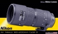

柒郎2014-01-22 11:184.42 分
操作性 4.50耐用性 4.50性价比 5.00解像力 4.00色彩还原 4.50机械结构 4.00
myzh352013-03-24 19:464.58 分
操作性 5.00耐用性 5.00性价比 5.00解像力 3.50色彩还原 4.50机械结构 4.50
mdf00122013-01-03 19:584.83 分
操作性 4.50耐用性 5.00性价比 5.00解像力 5.00色彩还原 5.00机械结构 4.50
伟王子2012-07-27 14:164.5 分
操作性 4.50耐用性 4.50性价比 4.50解像力 4.50色彩还原 4.50机械结构 4.50
xinxiliu2012-03-11 17:354.83 分
操作性 4.50耐用性 5.00性价比 5.00解像力 4.50色彩还原 5.00机械结构 5.00
pittx2011-11-17 16:354 分
操作性 4.50耐用性 4.50性价比 5.00解像力 3.00色彩还原 3.00机械结构 4.00
kaodigua05042011-11-15 11:084.75 分
操作性 4.50耐用性 4.00性价比 5.00解像力 5.00色彩还原 5.00机械结构 5.00
alcayuan2011-10-23 00:034.75 分
操作性 4.50耐用性 4.50性价比 5.00解像力 5.00色彩还原 5.00机械结构 4.50
05837782011-10-13 00:534.67 分
操作性 4.00耐用性 5.00性价比 5.00解像力 4.50色彩还原 5.00机械结构 4.50
民子8503142011-09-14 13:03

johnlu0072011-08-05 06:444.83 分
操作性 4.50耐用性 5.00性价比 5.00解像力 5.00色彩还原 4.50机械结构 5.00
shiftourworld2011-05-24 15:234.75 分
操作性 4.50耐用性 4.50性价比 5.00解像力 5.00色彩还原 5.00机械结构 4.50
lijing19622011-05-14 16:284.5 分
操作性 4.50耐用性 4.50性价比 4.50解像力 4.50色彩还原 4.50机械结构 4.50
四月下午2011-04-09 23:344.75 分
操作性 4.50耐用性 5.00性价比 4.00解像力 5.00色彩还原 5.00机械结构 5.00
天涯游者2011-01-15 13:334.75 分
操作性 4.50耐用性 4.50性价比 5.00解像力 5.00色彩还原 5.00机械结构 4.50
zonyee2010-07-02 13:174.17 分
操作性 4.00耐用性 4.50性价比 4.50解像力 4.00色彩还原 4.00机械结构 4.00
品山品水品女人2010-06-02 12:244.75 分
操作性 5.00耐用性 5.00性价比 4.00解像力 5.00色彩还原 5.00机械结构 4.50
泰山石敢当2010-04-03 16:564.83 分
操作性 5.00耐用性 5.00性价比 5.00解像力 4.50色彩还原 5.00机械结构 4.50
康林2010-03-20 20:224.67 分
操作性 4.50耐用性 5.00性价比 5.00解像力 4.50色彩还原 4.50机械结构 4.50
华家池之猫2010-02-14 15:224.58 分
操作性 4.50耐用性 5.00性价比 5.00解像力 4.50色彩还原 5.00机械结构 3.50
liusm12342010-01-07 16:114.92 分
操作性 5.00耐用性 5.00性价比 5.00解像力 4.50色彩还原 5.00机械结构 5.00
西湖金牛2009-12-26 10:024.67 分
操作性 4.50耐用性 5.00性价比 4.50解像力 4.50色彩还原 4.50机械结构 5.00
口中棉花糖2009-11-18 12:194.5 分
操作性 4.50耐用性 4.50性价比 4.50解像力 4.50色彩还原 4.50机械结构 4.50
myx6662009-09-12 15:424.58 分
操作性 4.00耐用性 4.50性价比 5.00解像力 5.00色彩还原 5.00机械结构 4.00
squreer2009-08-21 20:574.58 分
操作性 4.50耐用性 4.50性价比 5.00解像力 4.50色彩还原 4.50机械结构 4.50
mmxxddff2009-07-15 15:504.83 分
操作性 4.50耐用性 4.50性价比 5.00解像力 5.00色彩还原 5.00机械结构 5.00
decayedapple2009-06-16 03:184.67 分
操作性 4.50耐用性 5.00性价比 5.00解像力 5.00色彩还原 4.50机械结构 4.00
zhengyuping2009-01-19 21:124.83 分
操作性 4.00耐用性 5.00性价比 5.00解像力 5.00色彩还原 5.00机械结构 5.00
ghzl13142008-10-21 10:384.75 分
操作性 4.50耐用性 4.50性价比 5.00解像力 5.00色彩还原 5.00机械结构 4.50
狗头天下2008-10-17 23:284 分
操作性 3.50耐用性 4.00性价比 4.00解像力 5.00色彩还原 4.00机械结构 3.50
lotuslee2008-08-20 08:544.42 分
操作性 4.50耐用性 4.00性价比 5.00解像力 4.50色彩还原 4.50机械结构 4.00
慕容飞2008-08-05 13:184.58 分
操作性 4.50耐用性 4.00性价比 5.00解像力 4.50色彩还原 5.00机械结构 4.50
兜兜色色2008-07-30 22:374.67 分
操作性 5.00耐用性 4.50性价比 5.00解像力 4.50色彩还原 4.50机械结构 4.50
netding2008-06-10 17:094.83 分
操作性 4.50耐用性 5.00性价比 5.00解像力 4.50色彩还原 5.00机械结构 5.00
jsluo2008-06-10 13:504.75 分
操作性 4.50耐用性 5.00性价比 5.00解像力 4.50色彩还原 4.50机械结构 5.00
昆明陈晨2008-06-04 12:504.42 分
操作性 4.50耐用性 4.50性价比 4.50解像力 4.50色彩还原 4.50机械结构 4.00
耍宝2008-05-30 12:274.42 分
操作性 4.50耐用性 4.00性价比 5.00解像力 4.50色彩还原 4.50机械结构 4.00
我是崔健2008-05-23 15:204.25 分
操作性 4.00耐用性 4.00性价比 4.00解像力 4.50色彩还原 4.50机械结构 4.50
michael9998882008-05-22 11:464.58 分
操作性 4.50耐用性 4.50性价比 4.50解像力 4.50色彩还原 5.00机械结构 4.50
sgt2008-05-21 22:014.92 分
操作性 5.00耐用性 5.00性价比 5.00解像力 5.00色彩还原 4.50机械结构 5.00
正面2008-05-10 22:183.75 分
操作性 4.00耐用性 3.50性价比 4.00解像力 4.00色彩还原 4.50机械结构 2.50
尼奥2008-05-06 20:034.17 分
操作性 4.50耐用性 3.50性价比 5.00解像力 4.00色彩还原 4.50机械结构 3.50
故乡心2008-04-29 18:114.5 分
操作性 4.50耐用性 5.00性价比 4.00解像力 4.50色彩还原 4.50机械结构 4.50
踏板2008-04-21 11:534.75 分
操作性 4.50耐用性 4.50性价比 5.00解像力 5.00色彩还原 5.00机械结构 4.50
LEICARRR2008-04-10 20:064.58 分
操作性 5.00耐用性 4.50性价比 5.00解像力 4.50色彩还原 4.00机械结构 4.50
壳壳贝2008-04-04 06:024.5 分
操作性 4.50耐用性 4.50性价比 5.00解像力 4.50色彩还原 4.50机械结构 4.00
nikonman20082008-03-10 19:144.17 分
操作性 4.50耐用性 4.50性价比 3.50解像力 4.00色彩还原 4.50机械结构 4.00
aceboy2008-02-24 18:564.67 分
操作性 4.50耐用性 4.50性价比 5.00解像力 5.00色彩还原 5.00机械结构 4.00
semlb2008-02-12 22:584.83 分
操作性 5.00耐用性 4.50性价比 5.00解像力 5.00色彩还原 5.00机械结构 4.50
色王子2002-04-16 13:484.33 分
操作性 4.50耐用性 5.00性价比 3.50解像力 4.00色彩还原 4.50机械结构 4.50
3d-pixel2002-04-11 04:264.83 分
操作性 4.50耐用性 5.00性价比 5.00解像力 5.00色彩还原 5.00机械结构 4.50
jsnjdbh2002-04-10 16:474.83 分
操作性 5.00耐用性 5.00性价比 5.00解像力 4.50色彩还原 4.50机械结构 5.00
夜读经史2002-04-10 11:564.83 分
操作性 5.00耐用性 5.00性价比 4.50解像力 4.50色彩还原 5.00机械结构 5.00
leicam72002-04-09 22:314.67 分
操作性 4.50耐用性 4.50性价比 5.00解像力 4.50色彩还原 5.00机械结构 4.50